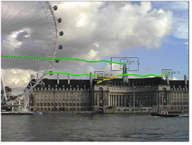

本教程教你如何使用 核武器 用于跟踪、稳定和匹配移动的跟踪器节点。
每个电影制作人都知道整合愿景的挑战。你可能没有钱建造后世界末日蒙特利尔，但是你可能有足够的钱在后世界创造它。你的演员可能有精彩的表演 -- 但不是在同一个镜头中。幸运的是，你可以合成最好的收获。你与 5 名一线演员、 100,000 名临时演员和 57 头大象的战斗序列，从实验室回来时，反面有划痕。你可以修好它。你可以。精明的制作团队知道如何利用数字技术使其成为可能，以及 核武器 的跟踪工具对于这些情况是不可或缺的。
正如你可能知道的，跟踪是记录特征在场景中移动时的位置的过程。结果存储为图像平面上的二维坐标。一旦你有了跟踪数据，你就可以使用运动来执行各种有用的任务，比如稳定镜头，将运动应用于组合中的其他元素, 并提高了滚涂的精度。
|
 |
| 跟踪图像特征。 |
跟踪过程的一个重要方面是仔细查看你的镜头 之前 你试图追踪。通过你的序列播放几次，看看你想跟踪的功能的运动方向。注意运动模糊、遮挡对象或隐藏特征或移出屏幕的帧的潜在问题。
提示: 核武器 通常可以补偿问题镜头，但是当你可以在整个镜头长度中识别不同的特征时，跟踪效果最好。
|
|